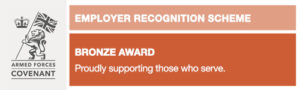
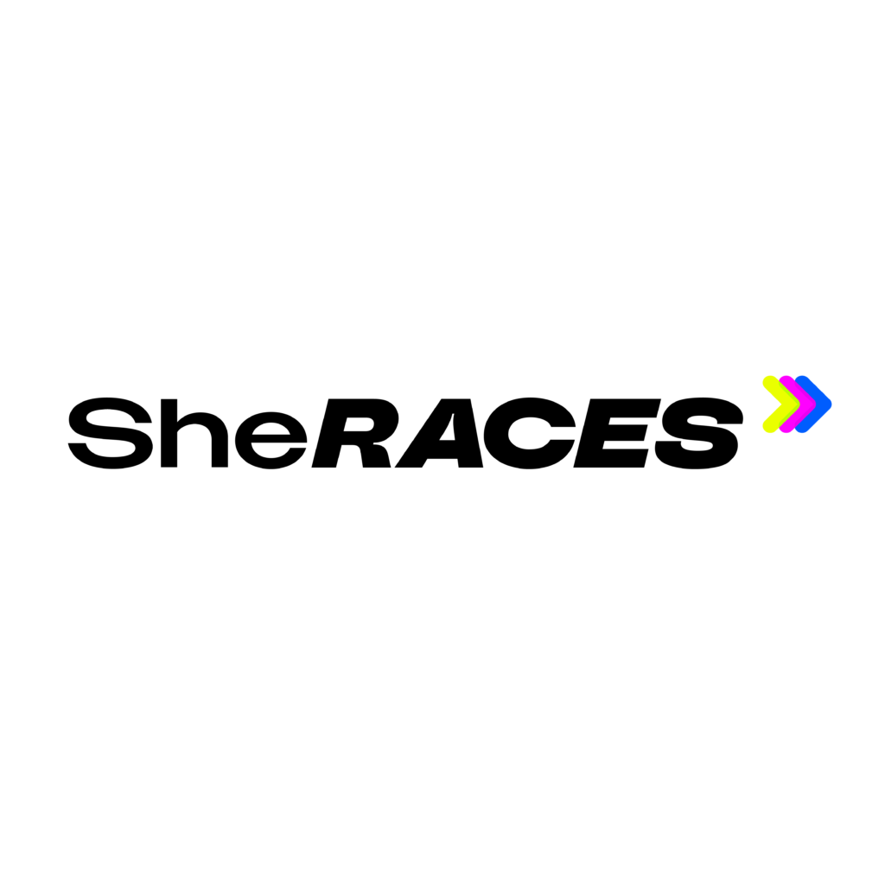

A way of life we love
Go Beyond was founded in 2008 and purchased in 2018 by Simon Hollis. As a former Infantry Soldier with a passion for ultra marathon running, Simon is literally living the dream.
After leaving military service Simon worked in various management roles and over 8 years as a health and sports club manager. Running started with 10K leading to the 100K London to Brighton as his first ultra. Simon has completed a total of 17 ultras including some of the world's toughest races — Marathon des Sables, the Amazon Jungle Ultra, the first ever For Rangers Ultra in Kenya — and in 2017 became the first Englishman to complete the High Fives in the Great Himalayan Running Festival in Himachal Pradesh, India, crossing the second highest road pass in the world at 17,500 feet.
So you can see — this really is the only job for him!

Go Beyond Challenge exists to provide a platform for people to achieve dreams and goals, pushing themselves to new limits, supported by a passionate and experienced team who will help them every step of the way.
We love what we do and we never take it for granted. We work hard to put on amazing events for our running friends in Northants, the UK and beyond. We want you to think of us when you're looking for your next athletic adventure — perhaps because the event was amazing, or the friends, or the organisation. Whichever it was, we hope to see you soon.


We are very aware that ultramarathon events are often dominated by men, with a much smaller percentage of women making it to the start line. At Go Beyond Challenge we are striving to reduce the gender gap, encouraging more women to take part in long distance running.
Read More about She Races